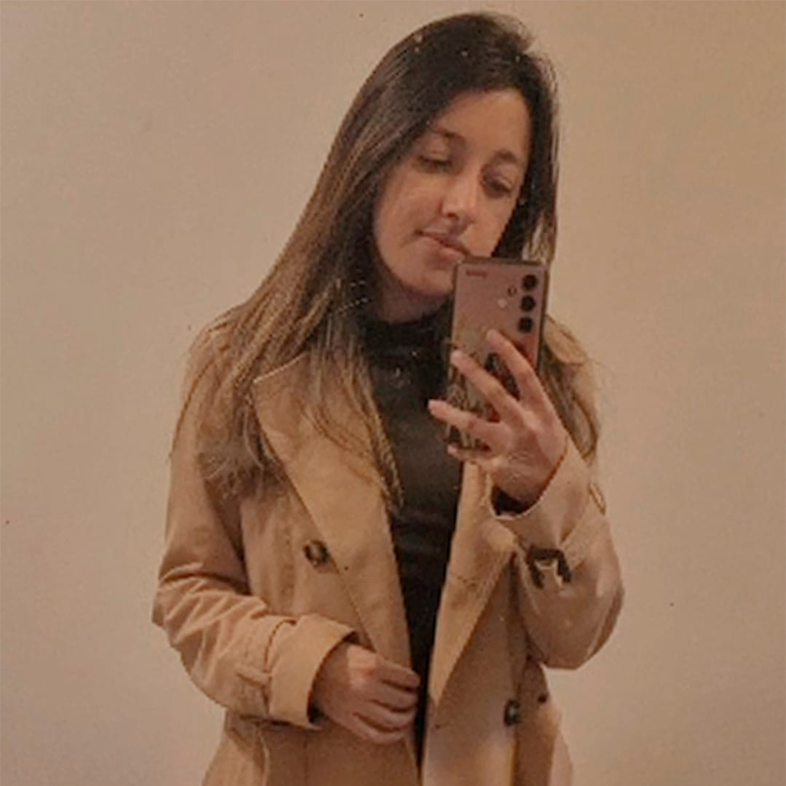

A equipe:
Fazer Acontecer

Leandro - Coordenador
Fazer acontecer: Transformar ideias em ação com iniciativa, responsabilidade e foco em resultados.

Blayni - Analista
Melhoria contínua: é sempre buscar otimizar processos e resultados. A ideia é aprender com cada experiência e aplicar esses aprendizados no dia a dia.

Maria - Assistente
Respeito e voz a todos e a cada um: é reconhecer a importância de cada ser, Onde todos têm a liberdade de expressar suas ideias.

Adriele - Assistente
Capacidade de Adaptação: é saber lidar com as mudanças e ver nelas uma chance para crescer, aprender e melhorar.